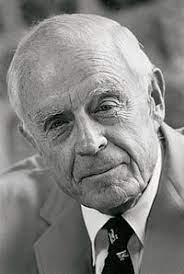

Thomas J. Watson, Jr., was chairman and chief executive officer during IBM's most explosive period of growth. He led the company from the age of mechanical tabulators and typewriters into the computer era.
| year | Education |
|---|---|
| 2014-2020 | Galaxy Public school |
| 2015-2018 | Xaiver School |
| 2009-2020 | United school |
| 2010=2019 | Ideal Model School |